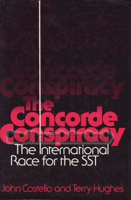

Voici quelques ouvrages retraçant les batailles politiques autour de Concorde :
Concorde - 1968 - Jean Fusil - France-Empire - 20x14 238p 
Un ouvrage écrit un peu avant le premier vol par un journaliste.
Ce livre retrace en détail toutes les guerres politiques qui ont entouré le développement de Concorde.
Par contre les aspects techniques ne sont pas relatés. Des photos noir et blanc connues.
The Concorde affair - 1969 - John Davis - H. Regenry compagny - 22x15 238p 
Ouvrage Américain, avec quelques schémas en noir & blanc.
Livre paru avant les annulations de commandes de 1973 et le lobbying Américain qui a suivi pour tenter
de tuer Concorde.
Sa lecture approche les aspects technique de l'avion,
mais surtout les aspects politiques et économiques l'entourant.
CONCORDE - 1975 - J. Costello & T. Hughes - Angus & Robertson- 23x16 302p 
Ouvrage en Anglais, avec des photos en noir & blanc, quelques schémas et égayé par
de sémillants dessins humoristiques. Ce livre décrit en détails le dessous des cartes politiques
du projet Concorde. On y découvre tous les coups bas qui ont été portés
en France, en Angleterre, aux USA, voire en URSS par les hommes politiques de l'époque.
The Concorde Conspiracy - 1976 - J. Costello & T. Hughes - Scribners - 23x16 302p 

Exactement le même contenu que le précédent ouvrage ; seuls le titre et la couverture diffèrent.
La lecture en est donc tout aussi intéressante.
The battle for Concorde - 1971- J. Costello & T. Hughes- The Compton Press -22x15 158p 
Mêmes auteurs que le précédent ouvrage, mêmes illustrations, et parfois mêmes textes.
Ecrit 4 ans avant leur ouvrage "CONCORDE", pendant le développement de l'avion, cet ouvrage est bien moins complet.
Il est donc normal de conseiller de se tourner directement vers la version de 1976.
Concorde and the Americans- 1997 - Kenneth Owen - Airlife publishing- 24x16 232p 
Ouvrage Anglais, avec quelques photos inédites en noir & blanc.
Tous les coups bas donnés par les Etats unis à Concorde sont ici longuement décrits et analysés.
Les aspects économiques de ce projet titanesque sont aussi abordés.
SST and sonic boom handbook - 1970 - William A. Shurcliff - Ballantine books - 18x11 153p 
Ouvrage Américain, avec quelques schémas.
Hymne à la mauvaise foi et au mensonge, ce livre a été écrit par la ligue anti-supersonique.
Découvrez comment 500 millions de personnes par jours peuvent être terrorisées par les avions supersoniques.
Cet ouvrage est très instructif sur le lobbying anti-concorde en 1970, avant son apogée quelques années plus tard.
Le dossier vérité du Concorde - 2002 - Claude-Alain Sarre -
Les ed. aéronautiques - 21x15 384p 
Presque à la manière d'un livre policier, une vision chronologique sur le projet Concorde,
avec tous les aspects politiques, économiques et stratégiques qui ont accompagné son développement.
Vraiment intéressant, différent de biens des livres sur Concorde, qui se ressemblent parfois.
La quantité de sources et la grande bibliographie utilisées pour rédiger cet ouvrage attestent du grand travail
de recherche pour cet historien qui est aussi un homme de grande expérience industrielle (ex directeur de Citroen).
Un ouvrage précis et précieux.